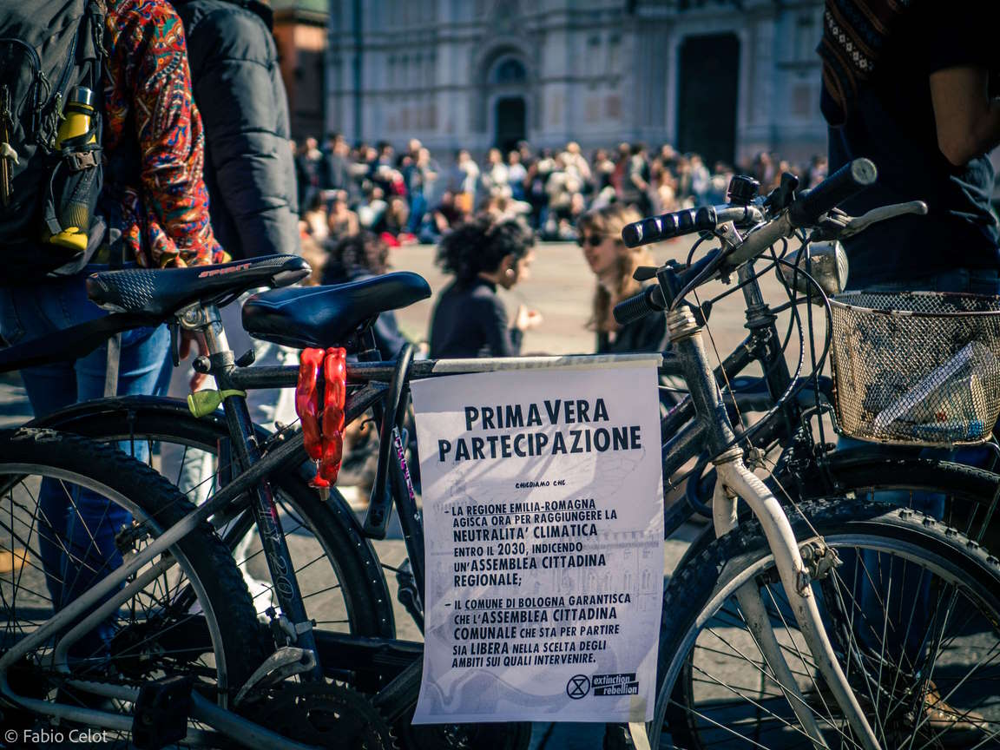
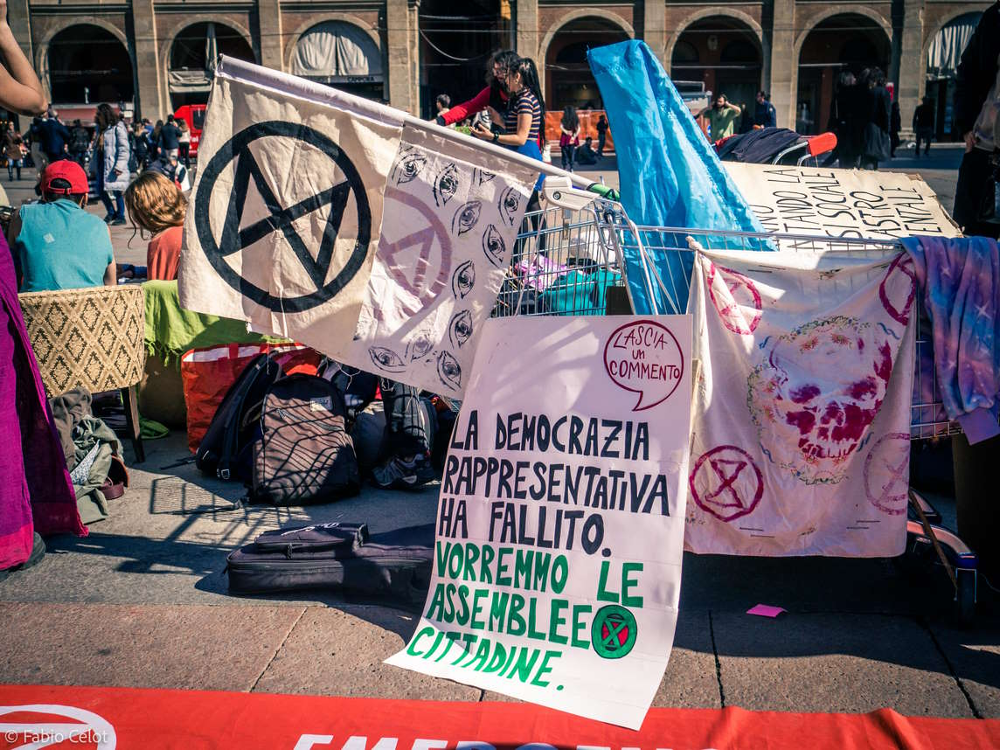

Extinction Rebellion è un movimento di disobbedienza civile di massa che chiede ai governi di invertire la rotta che ci sta portando verso il disastro climatico e ecologico. Questo è il sito del gruppo bolognese. Per informazioni sul movimento e le sue richieste: sito XR Italia. Per sapere cosa sono le assemblee cittadine, vedi qui. Per contattare il gruppo locale: contatti.
Siamo di fronte alla più grave crisi nella storia della specie umana. Abbiamo causato un'emergenza climatica ed ecologica che, se non verrà affrontata con la rapidità e la serietà che merita, renderà la Terra inospitale alla vita di innumerevoli specie, compresa la nostra. Le scelte che le istituzioni faranno entro il 2025 decideranno che tipo di futuro ci aspetta, e la possibilità di averne uno.
La quasi totalità della comunità scientifica, tra cui vari gruppi come l'IPCC e il CCAG, parlano degli anni che stiamo vivendo come "l'ultima chiamata" per il futuro dell'umanità, e a questa chiamata le istituzioni si stanno rivelando ogni giorno sempre più sorde. Invece che ascoltare la scienza, e prendere decisioni radicali, coraggiose e necessarie, preferiscono continuare con il "business as usual" dando priorità al profitto di pochi, piuttosto che agire per assicurare un futuro all'umanità. E noi non ci stiamo più.
La Regione Emilia-Romagna ad agosto 2019 ha firmato la "Dichiarazione di Emergenza Climatica ed Ambientale", dimostrando consapevolezza rispetto alla crisi che stiamo iniziando ad attraversare. Nella stessa dichiarazione, scrive che sceglie "di aderire all’allarme lanciato da giovani e giovanissimi di tutto il mondo con il movimento Fridays for Future che chiedono di raggiungere l’obiettivo di zero emissioni al 2030 per fronteggiare la situazione grave in cui si trova il pianeta" e considera che "diventano pertanto strategici per la Regione: la riduzione delle emissioni climalteranti del 20% al 2020 e del 40% al 2030 rispetto ai livelli del 1990; l’incremento al 20% al 2020 e al 27% al 2030 della quota di copertura dei consumi attraverso l’impiego di fonti rinnovabili".
Fino ad oggi, dunque per tre anni, queste sono rimaste soltanto parole e la Regione Emilia Romagna non ha fatto nessun passo significativo per risolvere il problema. Altri tre anni di inazione politica non ce li possiamo permettere.
Alla Dichiarazione di Emergenza Climatica ed Ambientale è seguito, nel 2020, il "Patto per il Lavoro e per il Clima", che contiene l'agenda climatica regionale. Il Patto presenta la neutralità climatica entro il 2050 e il passaggio al 100% di energia da fonti rinnovabili nel 2035 come obiettivi principali della transizione ecologica. L'obiettivo di neutralità climatica, posto al 2050, non è una misura degna dell'emergenza che ci troviamo ad affrontare.Lo affermano vari autorevoli scienziati tra cui Sir David King, chimico a capo del Climate Crisis Advisory Group, il quale spiega che "raggiungere lo zero netto di emissioni entro il 2050 non è abbastanza per assicurare un futuro sicuro all'umanità.
Insieme a degli obiettivi tardivi, manchevoli e dunque gravemente insufficienti, non si trova traccia nel "Patto per il Lavoro e per il Clima" di una progettazione precisa di politiche pubbliche che possano portare al raggiungimento di questi obiettivi, nè tantomeno vengono specificati i soggetti pubblici incaricati di portare a termine questo duro e necessario lavoro. Senza obiettivi intermedi, il raggiungimento di quelli a lungo termine si fa impossibile, e priva la cittadinanza di uno strumento di monitoraggio imprescindibile. Così facendo ci è precluso sapere se e come la Regione in cui abitiamo sta tutelando il nostro futuro. A tutto questo non ci stiamo.
Si parla inoltre troppo poco delle grandi opere dannose su cui la Regione Emilia Romagna sta investendo miliardi di fondi pubblici, che delineano una chiara contraddizione con gli obiettivi stessi che la Regione si pone per quanto riguarda il taglio delle emissioni. L'allargamento autostradale e tangenziale del Passante di Mezzo e l'allargamento dell'aeroporto Marconi, due fra le tante opere che peggioreranno ulteriormente la qualità dell'aria e la qualità della vita in quella che è già una delle zone più inquinate d'Europa. Aumenteranno i problemi di salute causati dall'inquinamento, aumenteranno il numero delle morti, e renderanno impossibile il raggiungimento di emissioni zero in un tempo necessario per salvaguardare il nostro futuro.
In particolare il Passante di Mezzo è in totale contraddizione con quelli che sembrano essere i valori della Regione, per lo meno con ciò che è scritto nel Patto per il Lavoro e per il Clima, dove si legge tra gli obiettivi quello di "potenziare e qualificare il trasporto su ferro, sia per le persone che per le merci, anche attraverso il completamento dell’elettrificazione della rete regionale". I 2,5 miliardi di Euro di fondi pubblici spesi per allargare un'autostrada e una tangenziale sono investimenti tolti al potenziamento del trasporto pubblico di persone, nelle città e nelle zone rurali già poco considerate dal trasporto collettivo.
Sono inoltre 2,5 miliardi di Euro di cemento, quando ben sappiamo che l'Emilia Romagna è la quarta regione italiana per consumo di suolo (sia totale che pro capite), inserita in uno Stato che è a sua volta il peggiore in tutta Europa per consumo di suolo. L'allargamento del Passante di Mezzo, quello dell'Aeroporto Marconi, l'impermeabilizzazione dei terreni agricoli per lasciare posto a enormi poli logistici, sono progetti che richiederanno la cementificazione di grandi aree, e priveranno la cittadinanza di ulteriore suolo fertile. Il Passante di mezzo, infine, viene presentato addirittura come "un'opera green", attraverso un'evidente operazione di greenwashing. La transizione ecologica non si fa allargando strade e aeroporti. Perché allargare strade e aeroporti compromette il nostro futuro.
Il Patto per il Lavoro e per il Clima è stato firmato solo da 54 realtà datoriali e di categoria. Mentre ben 76 associazioni ecologiste regionali, costituitesi nella Rete Emergenza Climatica e Ambientale dell'Emilia-Romagna (RECA ER), non hanno firmato perché le osservazioni e le modifiche da loro suggerite alla Regione durante la fase di consultazione non sono state incluse nel documento programmatico della Regione stessa, come ad esempio la mancanza di specifiche su come raggiungere uno degli obiettivi più importanti del Patto, ovvero il 100% di energia da fonti rinnovabili.
Per trovare le soluzioni necessarie per rispondere a questa emergenza abbiamo bisogno di rafforzare la nostra democrazia rappresentativa, dimostratasi carente nell'affrontare l'enorme sfida della transizione ecologica, affiancando ad essa e alle Istituzioni che ci governano un organo di democrazia partecipativa formato da cittadini e cittadine. Abbiamo bisogno di un'Assemblea Cittadina, nella quale un gruppo di cittadini e cittadine possa, con il supporto di un team di scienziati e di facilitatori dei processi decisionali, intraprendere un percorso di discussione finalizzato a far emergere un consenso attorno a politiche pubbliche radicali per fronteggiare la crisi in cui ci troviamo. Un organo di questo tipo, oltre ad aiutare le Istituzioni attraverso proposte di politiche pubbliche, permette alla cittadinanza di far sentire la propria voce nelle scelte che decideranno il futuro di tutti e tutte. È a questo scopo che le Assemblee Cittadine sono composte da un gruppo di cittadini e cittadine estratte a sorte sulla base di un campionamento stratificato che dia rappresentanza a tutte le componenti sociali, soprattutto a quelle che appartengono ai gruppi resi più fragili e che subiscono in misura maggiore le conseguenze nefaste della crisi eco-climatica. Abbiamo bisogno di ascoltare la scienza, ascoltarci a vicenda e decidere insieme. Solo così potremo affrontare l'emergenza eco-climatica nel rispetto della giustizia sociale.
Infine, siamo ben coscienti che scongiurare il collasso eco-climatico, e il collasso sociale ad esso collegato, sia una partita complessa che si gioca su molteplici livelli e non si può fermare a quello regionale: per questo motivo è importante che la Regione Emilia-Romagna, se davvero vuole presentarsi come un modello virtuoso nel contesto nazionale, faccia pressione affinché il nostro Governo dimostri di considerare la lotta alla crisi eco-climatica una priorità ed emetta una Dichiarazione di Emergenza Climatica ed Ecologica.
Come Extinction Rebellion Bologna chiediamo dunque che la Regione non perda più tempo e che agisca ora accogliendo tre richieste, per l'attuazione delle quali chiediamo la predisposizione di un tavolo di confronto con esperti ed esperte competenti in materia.
La prima richiesta è quella di rivedere gli obiettivi dell'agenda climatica regionale, il Patto per il Lavoro e per il Clima, alla luce dello stato dell'arte degli studi sui cambiamenti climatici, in particolare il IV Rapporto IPCC del 2022, per raggiungere la neutralità climatica entro il 2030. Deve essere elaborata una road map completa, che contenga obiettivi intermedi e monitorabili, a partire dal 2023.
La seconda richiesta è che questo lavoro di revisione venga fatto attraverso l'istituzione di un'Assemblea Cittadina per il Clima a livello regionale, integrando la struttura politica esistente con un organo di democrazia partecipativa.
La terza richiesta è quella di inviare una lettera al Governo Italiano, comunicando l'urgenza della crisi e chiedendo che venga firmata a livello nazionale una Dichiarazione di Emergenza Climatica ed Ecologica. Essa, oltre ad essere una presa di coscienza e dimostrazione della consapevolezza della situazione, permetterebbe di snellire l'iter burocratico delle leggi di cui abbiamo bisogno adesso.
La finestra di tempo per agire si sta velocemente chiudendo. Non possiamo permetterci altre esitazioni. Il nostro futuro è in gioco e per questo che ci ribelliamo.
Con amore e rabbia,
Extinction Rebellion
Abbiamo bisogno di te - non importa chi tu sia o quanto tempo hai a disposizione - per costruire assieme un movimento di massa! Insieme siamo forti! Scegli Il percorso che fa per te.
Scrivi su xrbologna@protonmail.com oppure compila questo form per:
| Info | xrbologna@protonmail.com |
| www.facebook.com/XRBologna | |
| www.instagram.com/xrbologna | |
| Telegram Bologna | t.me/XRBologna |
| Telegram nazionale | t.me/XRItaly |
| Gruppo nazionale | www.extinctionrebellion.it |